Ручные инструменты.


Ручные инструменты предназначены для выполнения работ с приложением собственной силы. Большинство из них с легкостью можно заменить механическими аналогами, которые приводятся в действие силой тока. Но даже несмотря на то, что уровень технологического развития достиг значительных высот, некоторые ручные инструменты до сих пор остаются незаменимыми.
Появился ручной инструмент 50 тысяч лет назад, когда первобытный человек только начал думать о том, как бы облегчить свое существование. И первое, о чем он подумал, было следующее: если взять в руку камень, то можно увеличить силу удара руки. Так возник первый, древнейший вид ударного инструмента.
Человек заметил, что при падении с высоты или при сильном ударе по камню он раскалывается с образованием камней другой формы, имеющих острые кромки. Из получившихся кусков был выбран тот, который лучше всех ложился в руку и имел удобно расположенную режущую кромку. Это было ручное рубило. Так возник второй вид инструмента – режущий.
Технология родилась именно в этом процессе. Применение рубила показало, что для успешной работы нужно искать достаточно твердые камни для его изготовления. Режущая кромка у мягких камней быстро затуплялась, что заставляло тратить время на изготовление другого рубила.
Материаловедение возникло из опыта сравнительной оценки различного вида камней для создания рубил с режущими кромками высокой стойкости и подборе соответствующего вида камня.
Опыт применения данного инструмента показал, что его режущие свойства обеспечиваются тем, что кромка имеет острую форму (клин). Открытие клина и его режущих свойств было одним из великих открытий первобытного человека. Оно стоит в одном ряду с открытием огня и умением добывать его.
КиркаПрименяется для разрыхления твердого грунта, раскерновки твердого балласта, грунта и льда. Однако также для этого используют киркомотыгу. Мотыга имеет сечение в оба конца, как молоток, а кирка сделана кривым заступом, «костылем» или с «клювом» в одну сторону.
Вес кирки – 3,4 кг. Изготавливается из стали марки Ст. 45. Ее рабочие концы закалены до твердости 35–40 Rс.
ЛопатаПри устройстве фундамента или выравнивании почвы перед началом строительства используются определенные виды лопат.
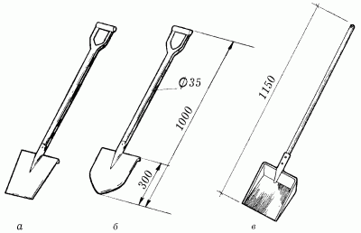
Рис. 8. Виды строительных лопат: а – лопата с прямой режущей частью; б – лопата с остроконечной нижней частью; в – растворная лопата.
Лопата с прямой режущей частьюПрименяется во время работы, связанной со снятием мягкого грунта и выравниванием почвы. Рекомендуется выбирать ее с учетом собственных сил и возможностей. Самый оптимальный размер режущей части (ножа) – 30 х 28 см.
Лопата остроконечнаяНезаменима, когда надо снять такой грунт, как гравий. Но советуем обратить внимание на то, что она не предназначена для выравнивания поверхностей.
Этот вид лопаты применяется при копании траншей под фундамент небольшого строения, например садового домика.
Подбирать лопату следует в соответствии со своим ростом, а работать – только в перчатках.
Заступ с остроконечной режущей частьюИспользуется для перемешивания и смягчения различных растворов, применяемых во время строительства.
Длина ножа составляет около 30 см, а ширина – 25 см. Оптимальный размер черенка должен быть чуть больше 1,35 см в диаметре. Черенок может быть изготовлен как из дерева, так и из пластика.
Делаем фундаментФундамент – это подземные несущие конструкции, предназначенные для передачи и распределения нагрузки от здания на грунт.
Верхнюю плоскость фундамента, на которую опираются стены, колонны, лестничные клетки и другие элементы здания, называют обрезом, а плоскость, благодаря которой фундамент опирается на грунт, – подошвой фундамента. Расстояние от подошвы до обреза фундамента называется высотой фундамента. Иногда стены фундамента образуют подвал здания. К фундаментам предъявляют определенные требования: прочность, стойкость к воздействию воды и холода, простота изготовления, экономичность.
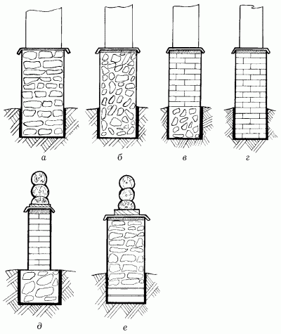
Рис. 9. Фундаменты, сделанные из различных материалов: а – бутовый; б – бутобетонный; в – кирпичный с бутобетоном; г – кирпичный; д – кирпичный с бутом; е – бутовый на песчаной подушке.
По конструкции фундаменты бывают:
– ленточные – под стены или ряд столбов;
– столбчатые – под стены и отдельные колонны;
– сплошные – в виде железобетонной плиты под все здания;
– свайные – состоящие из отдельных свай, объединенных вверху бетонной или железобетонной плитой-ростверком, под здания повышенной этажности при слабом грунте.
В качестве материала применяют преимущественно бетон или железобетон, бутовый камень, бутобетон.
Фундаменты обычно делают ступенчатыми. Подошва фундамента наружных стен в связанных грунтах, например в глине, должна располагаться не выше уровня промерзания, а в песчаных грунтах она может быть расположена и выше уровня, но не меньше чем на глубине 1 м от поверхности земли. Глубина закладки фундамента под внутренние стены отапливаемых зданий не зависит от глубины промерзания грунта, но не может быть менее 30 см.
Инструменты, используемые при строительстве и штукатурных работах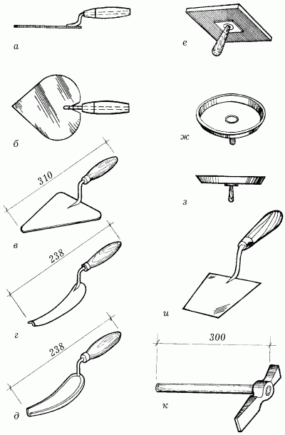
Рис. 10. Инструменты для кладки кирпича и оштукатуривания: а, б – мастерок штукатурный; в – мастерок строительный; г, д – расшивки; е – сокол для густого раствора; ж, з – сокол для жидкого раствора; и – кельма; к – молоток-кирочка.
КельмаКельма (или мастерок) предназначена для выполнения работ, связанных с бетоном или другими строительными растворами. Используется для заглаживания поверхностей (например, пола) и возведения каменной кладки.
Данный инструмент состоит из двух частей: деревянной ручки и изогнутой лопатки, сделанной из железа. Лопатка должна быть ровной, гладкой. Это позволит более качественно выровнять нужную поверхность. Общая длина составляет около 20 см. Размер рукояти – 8 см, лопатки – 10 см. Общий вес – 300–400 г. Но не обязательно придерживаться строго этих рамок, параметры мастерка можно подбирать индивидуально.
Кирпичная кладка кельмой вприжим выполняется следующим образом: держа в правой руке кельму, разравнивают ею растворную постель, затем ребром кельмы подгребают часть раствора и прижимают к вертикальной грани ранее уложенного кирпича, а левой рукой доносят кирпич к месту укладки. После этого укладывают кирпич на заранее подготовленную постель и, пододвигая его левой рукой к уже уложенному кирпичу, прижимают к полотну кельмы. Движением вверх правой руки вынимают кельму, а кирпичом, придвигаемым левой рукой, зажимают раствор между вертикальными гранями укладываемого и ранее уложенного кирпичей.
Нажимом руки осаживают уложенный кирпич на растворной постели. Избыток раствора, выжатый из шва на лицевую часть кладки, подрезают кельмой за один прием после укладки тычками каждых 3–5 кирпичей или после укладки ложками двух.
Для выполнения штукатурных работ кельмой поступают следующим образом: забор раствора производят правым ребром или концом мастерка, продвигая его к середине. В зависимости от условий работы набрасывание осуществляется слева направо и наоборот. В процессе набрасывания раствора участвует только кисть, а не вся рука. Не стоит также делать слишком сильный замах, чтобы раствор не разбрызгивался. Набрасывание раствора кельмой обеспечит лучшее сцепление с оштукатуриваемой поверхностью.
РасшивкаДля придания наружной поверхности кладки четкого рисунка и уплотнения раствора в швах их расшивают.
В этом случае кладку ведут с подрезкой раствора, а швам придают различную форму – прямоугольную заглубленную, с выпуклостью наружу или вогнутую вовнутрь, треугольную двухсрезную, применяя для этого расшивки с рабочей частью различных очертаний.
Расшивки вогнутой формы используют для получения выпуклых швов, а круглого сечения – для вогнутых швов. Швы расшивают до того, как схватится раствор, потому что в этом случае процесс становится менее трудоемким, а качество швов – значительно лучше.
Перед началом работы расшивкой поверхность кладки необходимо протереть ветошью или щеткой, чтобы избавиться от кусочков раствора. Затем расшивают вертикальные швы, после чего – горизонтальные.
Расшивка состоит из двух частей: деревянной ручки 7 см и изогнутой пластины 10 см.
Пользоваться расшивкой нужно следующим образом: расшивка, смоченная водой, передвигается без применения силы по шву между кладкой. После каждого проведения по швам ее необходимо очищать от налипшего раствора.
Молоток-кирочкаПрименяется для рубки целого кирпича на половинки, четвертинки и т. п., а также для обтесывания кирпича.
ШвабровкаПредназначена для очистки вентиляционных каналов от выступившего из швов раствора, а также для более полного заполнения швов раствором и заглаживания их.
На стальной ручке швабровки внизу закреплена между фланцами резиновая пластина размером 140 х 140 х 10 мм, с помощью которой и осуществляется процесс зачистки и заглаживания.
ПравилоЭтот инструмент необходим для равномерного распределения по поверхности набросанного раствора.
Обычно изготавливается из отфугованной деревянной или дюралевой рейки. Рекомендуемый размер – 20 х 110 см.
Работать правилом следует так: после того как раствор набросан на нужную поверхность, берут смоченное водой правило и очень плавно передвигают снизу вверх или справа налево, сглаживая неровности.
Стальная щеткаСлужит для очистки поверхностей от загрязнения. Щетки различаются по величине и степени тяжести.
СкребокИспользуется данный инструмент в том случае, если на поверхности, предназначенной для оштукатуривания, находятся обои, краска, слой побелки. Скребок изготавливается чаще всего из кровельной стали: длина лезвия должна быть около 15 см, а ширина – около 7 см.
БучардаПредназначена для нанесения насечек на поверхность в целях лучшего сцепления раствора с поверхностью. Представляет собой тяжелый молоток с зубчиками на обоих концах.
Троянки, зубчаткиТак же как и бучарды, используются для нанесения насечек. Представляют собой зубила, на лезвия которых нанесены зубчики. Зубчатки имеют более широкое лезвие, чем троянки.
СоколВо время штукатурных работ на него для удобства накладывают порцию раствора, который затем наносят на поверхность штукатурной лопаткой. Сокол очень просто изготовить, прикрепив в центре деревянного щитка (размером 35 х 35 см) ручку.
Штукатурная лопаткаСлужит для перемешивания раствора, нанесения его на поверхность и последующего растирания. Состоит из стального лезвия размером 22 х 17 см, закрепленного в деревянной ручке.
ОтрезовкаШтукатурная лопатка для выполнения мелких работ (длина лезвия не превышает 10 см).
ПолутерокПредназначен для разравнивания раствора на поверхности. Его можно изготовить самому из хорошо отшлифованной доски 15 х 70 см, прикрепив к ней деревянную ручку.
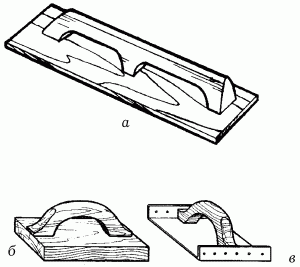
Рис. 11. Инструменты для оштукатуривания: а – полутерок; б – терка деревянная; в – терка металлическая.
ТеркаИспользуется для затирки штукатурки. По конструкции терка отличается от полутерка меньшим размером (примерно 13 х 19 см).
ФильцбреттФильцбретт представляет собой терку, покрытую войлоком, и используется для разглаживания штукатурки.
Перед тем как покрыть войлоком терку, необходимо сделать следующее: на рабочую сторону терки нанести гипсовый раствор толщиной 1 см, после чего сверху наклеить войлок. Затем терка кладется войлоком вниз и прижимается к поверхности опоры так, чтобы слой гипсового раствора уменьшился до 0,5 см, а для полного отвердения раствора сверху на терку помещается груз примерно на 30 мин.
Фильцбретт используют следующим образом: его плотно прижимают к штукатурке и совершают круговые движения, направленные против часовой стрелки. Если на поверхности имеются бугорки, тогда фильцбретт прижимают сильнее, а если впадины, то слабее. По мере трения все неровности удаляются ребром терки. Полотно двигает раствор по затираемой поверхности, при этом все впадины заполняются им. После выполнения круговой затирки на штукатурке остаются кругообразные следы, для удаления которых совершают затирку в разгон. Терку тщательно очищают от раствора и прижимают к поверхности, совершая прямолинейные движения – взмахи, убирая все следы, оставшиеся от предыдущей операции.
Возведение кирпичных конструкцийСтроительство дома из кирпича называют каменной кладкой. Прочность каменной кладки зависит от следующих факторов:
– марка кирпича;
– марка раствора;
– взаимное расположение камней или кирпичей в кладке;
– качественное выполнение самой кладки.
Элементы кладкиРяд кирпичей, уложенных с наружной стороны стены, называют наружной верстой, а с внутренней – внутренней верстой. Кирпичи, уложенные между верстами, носят название забутки.
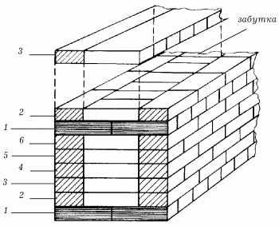
Рис. 12. Многорядная система перевязки: 1 – тычковый ряд; 2–6 – ложковые ряды.
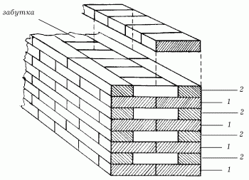
Рис. 13. Однорядная система перевязки (цепная): 1 – тычковый ряд; 2 – ложковый ряд.
В зависимости от того, как уложены кирпичи в верстах, они могут быть ложковыми (на поверхность кирпичи выходят боковой гранью – ложком) или тычковыми (на поверхность кирпичи выходят торцевой гранью – тычком).
Соответственно расположению кирпичей в наружной версте весь горизонтальный ряд кладки называют ложковым или тычковым.
Наличие вертикальных ограничений (углы здания, проемы) и смещение рядов кладки требуют применения неполномерного кирпича: половинок, четверток, трехчетверток.
Если кирпичная конструкция в дальнейшем будет оштукатуриваться, то ее выполняют впустошовку: швы ее на глубину 1,5 см от лицевой поверхности кладки раствором не заполняют. Оставленная незаполненной часть швов обеспечивает лучшее сцепление штукатурного слоя с кладкой. Для этой же цели кирпичи и камни, имеющие рифленые поверхности, укладывают в кладку этими неровными сторонами.
Для придания наружной поверхности кладки четкого рисунка и уплотнения раствора в швах кладку расшивают.
С помощью специального инструмента (расшивки) швам придают форму валика, выкружки.
Если к поверхности стен не предъявляют повышенных декоративных требований или их предполагают облицовывать, то кладку ведут вподрезку: выдавливаемый наружу при укладке кирпича раствор подрезают заподлицо с поверхностью кладки.
Кирпичи и камни укладывают плашмя на растворную постель, но иногда (при устройстве карниза и поясков) на грань (ложок) и стоймя (при кладке тонких перегородок толщиной 1/2 кирпича).
Требования к кирпичной кладкеКладку стен и других конструкций из кирпича необходимо выполнять с соблюдением правил производства и приемки работ СниП 111-17-75, точное выполнение которых обеспечивает нужную прочность возводимых конструкций и высокое качество работ.
Во время работы следует обращать внимание на правильность перевязки и качество швов кладки, вертикальность, горизонтальность и прямолинейность поверхности, а также углов, точность установки закладных деталей и связей, качество кладки (рисунок и расшивка швов, подбор кирпича с ровными кромками и углами для наружной версты неоштукатуриваемой кладки).
Независимо от системы перевязки тычковые ряды нужно обязательно укладывать в нижнем (первом) и верхнем (последнем) рядах возводимых конструкций.
Горизонтальные и вертикальные поперечные швы кирпичной кладки стен, а также все швы в перемычках, простенках и столбах (горизонтальные, вертикальные, поперечные и продольные) должны быть заполнены раствором.
При выполнении кладки впустошовку глубина не заполняемых раствором швов с лицевой стороны допускается не более 15 мм в стенах и не более 10 мм (только в вертикальных швах) в столбах.
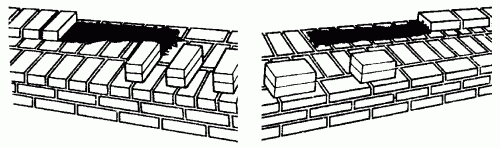
Рис. 14. Раскладка кирпича на стене.
Правила разрезки кладкиПервое правило требует, чтобы кирпичи или камни в кладке располагались рядами (слоями), перпендикулярными к усилиям, возникающим в процессе кладки.
Второе правило состоит в том, что вертикальные швы в кладке должны быть параллельны ее наружной поверхности или перпендикулярны к ней.
Третье правило разрезки кладки требует, чтобы вертикальные плоскости разрезки каждого ряда (слоя) смещались от плоскостей разрезки смежных рядов, в результате чего над и под каждым вертикальным швом ряда кладки находится не шов, а камень или кирпич.
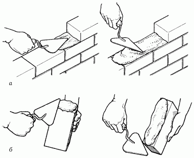
Рис. 15. Кладка кирпичей: а – разравнивание раствора; б – намазывание раствора на кирпич.
При некачественном выполнении горизонтальных швов в кладке возникают изгибающие и сдвигающие усилия. Прочность кладки при этом значительно снижается. Поэтому важно, чтобы швы имели строго определенную толщину, а плотность раствора в них была равномерна.
При временных перерывах кладочных работ, для того чтобы обеспечить в дальнейшем надежную перевязку новой кладки со старой, кладку ограничивают вертикальной или убежной штрабой. В вертикальные штрабы часто закладывают несколько арматурных стержней диаметром 8 мм.
Вертикальной штрабой называют и вертикальный паз, выполняемый в тех случаях, когда кладку перегородок ведут отдельно от кирпичной кладки.
Системы перевязки кирпичной кладкиОпределенный порядок, согласно которому располагаются отдельные кирпичи в кладке, называют системой перевязки или, как часто говорят, перевязкой. Наиболее распространенными системами перевязок являются однорядная (цепная), многорядная (пятирядная) и трехрядная. Кроме них, для кладки отдельных зданий применяются декоративные виды кладок.
При однорядной системе перевязки тычковые и ложковые ряды чередуются в каждом ряду кладки. Вертикальные поперечные швы перекрываются кирпичами вышележащего ряда на четверть кирпича, а продольные вертикальные швы – на половину кирпича.
При пересечении стен ложковый ряд пропускается через тычковый, не нарушая своей перевязки.
Наряду с простой и полной перевязкой швов, однорядная кладка имеет ряд недостатков:
1. Большое количество тычков в верстовых рядах и малый объем забутки, что повышает трудоемкость кладки.
2. Большой расход кирпича при кладке с облицовкой.
Из-за этих недостатков однорядную кладку для стен из кирпича применяют крайне редко.
При кладке стен из керамического камня с поперечными щелевыми пустотами использование цепной перевязки обязательно.
Очень часто кладку стен из кирпича выполняют многорядной перевязкой. Она состоит из одного тычкового и пяти ложковых рядов. В этой системе перевязки допускается отклонение от третьего правила разрезки, продольные вертикальные швы перекрываются только через пять рядов тычковым способом, что несколько снижает несущую способность кладки. Поперечные вертикальные швы в четырех ложковых рядах перекрываются ложками смежного ряда на половину кирпича, а швы пятого ложкового ряда – тычками одноименного ряда на четверть кирпича.
Кладку стен начинают с тычкового ряда. Внутреннюю версту тычкового ряда, если толщина стены равна целому числу кирпичей, выкладывают тычками, а при кратной половине кирпича – ложками. Забутку во всех рядах, кроме первого и второго, выполняют ложками. В следующем за тычковым ложковому ряду внутреннюю версту при толщине стены, кратной целому числу кирпичей, выкладывают ложками, а при кратной половине кирпича – тычками. Забутку во всех случаях выполняют ложками. Все последующие четыре ложковых ряда выкладывают из целого кирпича с перевязкой в полкирпича.
Широкое распространение многорядной системы перевязки объясняется ее преимуществами по сравнению с однорядной:
1. Меньшая трудоемкость. Забутку легче укладывать, чем наружные версты.
2. Не затрачивается время на заготовку трехчетверток.
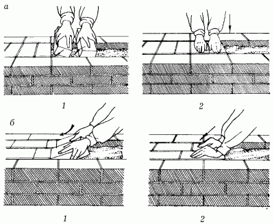
Рис. 16. Кладка забутки способом вполуприсык: а – тычками; б – ложками; 1–2 – последовательность действий.
Трехрядную систему перевязок применяют обязательно при кладке колонн, столбов и простенков. Эта система допускает совпадение наружных вертикальных швов в трех рядах кладки по высоте. Такая кладка требует меньшего количества неполномерного кирпича, чем однорядная или пятирядная. Кладку столбов и простенков нельзя выполнять «корзинкой», то есть выкладывать верстовые ряды по контуру только ложками. При такой кладке верстовые ряды не перевязываются с забуткой, а кладка получается непрочной.
Выполнение кирпичной кладкиПроцесс кирпичной кладки состоит из следующих элементов:
1. Установка порядовок.
2. Установка и перестановка причалки.
3. Подача кирпичей или перемещение камней и раскладка их на стене.
4. Перелопачивание, подача, расстилание и разравнивание раствора на стене.
5. Укладка кирпича в версты и в забутку.
6. Проверка качества выполненной части кладки.
7. Расшивка швов кладки (при необходимости).
8. Рубка и отсечка кирпича (по необходимости).
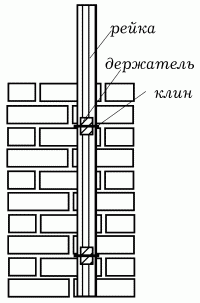
Рис. 17. Крепление порядовки к кладке.
Порядовки устанавливают вертикально в углах и на пересечении стен, а также через 10–12 м по фронту работ. Риски установленной порядовки должны совпадать с проектными высотными отметками швов кладки. Установку порядовки лучше выполнять вдвоем.
После этого на порядовке мягким графитовым карандашом намечают высотные отметки оконных и дверных проемов.
Причалку натягивают при кладке наружной версты на каждом ряду, а внутренней – через 3–4 ряда. Крепят причалку в порядовках на уровне рисок рядов. Для прикрепления причалки к выложенному участку кладки применяют скобу. Ее острый конец вставляют в шов, а к тупому, опирающемуся на кладку, привязывают причалку. Чтобы она не провисала, под нее подкладывают клиновидный деревянный брусок (маячный кирпич). Причалку натягивают на уровне верхней грани кирпича укладываемого ряда, на расстоянии 2–3 мм наружу от плоскости стены.
Подача кирпича и его раскладка происходят следующим образом: берут стопку из четырех кирпичей и раскладывают на внутренней стене для кладки наружной версты. Для кладки внутренней версты раскладку кирпича выполняют аналогично, но на наружной версте.
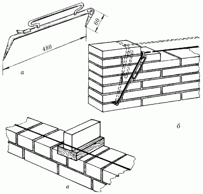
Рис. 18. Установка шнура-причалки: а – причальная скоба; б – перестановка скобы; в – предупреждение провисания шнура.
Подают раствор на стену и разравнивают его ковшом-лопатой. Раствор укладывают в виде грядки овальной формы и требуемой ширины. При кладке впустошовку раствор расcтилают, отступая от края на 2–3 см, а при кладке под расшивку – на 1 см. Для ложкового ряда растворную грядку делают шириной 7–9 см, а для тычкового – 20–22 см. Высота грядки – 2,5–3 см, длина 70–80 см. Под ложки раствор раcстилают боковой гранью ковша-лопаты, а под тычковые ряды – ее передним краем. При кладке забутки раствор набрасывают в корыто, образуемое верстовыми рядами, а разравнивают тыльной стороной ковша-лопаты. Для кладки столбов раствор подают на середину столба и разравнивают кельмой. Также кельмой разравнивают раствор при кладке внутренних стен с большим количеством каналов.
Укладка кирпича на раствор в верстовые ряды может быть выполнена двумя способами: вприжим и вприсык. Кладку стены с обязательным заполнением вертикальных швов, а также столбов и колонн выполняют вприжим. Делают это с помощью кельмы. Разровняв кельмой раствор, ее ребром подгребают часть раствора к ранее уложенному кирпичу. В то же время другой рукой берут со стены кирпич и укладывают его на раствор, прижимая к полотну кельмы, которую в этот момент вынимают из шва движением вверх.
Далее, нажимая на кирпич, осаживают его на постель и выравнивают по причалке к ранее уложенным кирпичам. После укладки 4–5 кирпичей кельмой подрезают избыток раствора, выжатый из горизонтального шва на лицо стены, и забрасывают обратно на постель.
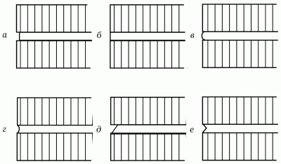
Рис. 19. Формы швов кладки: а – прямоугольная заглубленная; б – прямоугольная вподрезку; в – выпуклая; г – вогнутая; д – односрезная; е – двухсрезная.
Кладку кирпича под расшивку выполняют вприсык. Разравнивая кельмой раствор, свободной рукой берут со стены кирпич и, держа его наклонно к поверхности кладки на расстоянии 5–6 см от ранее уложенного, загребают гранью кирпича разостланный раствор для образования вертикального шва. Придвигая затем кирпич к ранее уложенным, осаживают его. Избыток раствора подрезают кельмой, как и при кладке вприжим.
Кладку кирпичей в забутовочные ряды выполняют способом вполуприсык, по два кирпича сразу. Берут в правую и левую руку по кирпичу, укладывают на растворную постель, подготовленную между верстовыми рядами, и осаживают на уровень с верстовыми рядами. Поперечные вертикальные швы при этом должны быть заполнены раствором.
Правильность закладки угла стены проверяют угольником и отвесом, горизонтальность – уровнем и правилом. Для этого уровень ставят на правило, уложенное на кладку.
Вертикальность поверхностей и углов кладки проверяют с помощью отвеса. Проверку горизонтальности и вертикальности кладки следует производить не реже двух раз на метр ее высоты.
Швы кладки, если это предусмотрено проектом, расшивают: сначала вертикальные швы, а затем горизонтальные. Расшивку производят вначале более широкой частью инструмента, а потом узкой. При этом указательный палец правой руки должен находиться на обратной стороне рабочей части инструмента.
Рубку кирпича с целью заготовок трехчетверток, половинок, четверток, необходимых для перевязки швов в кладке, выполняют молотком-кирочкой. Пользуясь нанесенными зарубками на ручке молотка-кирочки, отмеряют нужный размер кирпича, а лезвием отмечают линию обрубки. Легким ударом делают насечку на одной ложковой грани, а затем на другой. После этого сильным ударом лезвия разрубают кирпич по отмеченной линии.
Если нужно расколоть кирпич вдоль, то сначала наносят легкие удары лезвием молотка-кирочки по всем четырем плоскостям линии обрубки, а затем резким ударом раскалывают кирпич.
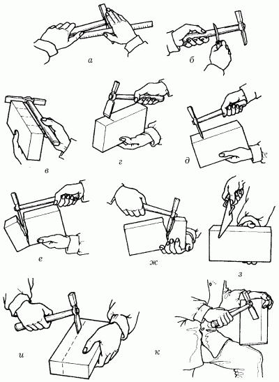
Рис. 20. Приемы рубки и тески кирпича: а – отмеривание длины; б – проставление отметки на рукоятке молотка; в – проверка длины частей кирпича; г – проставление линии рубки; д – насечка; е – рубка; ж – неверный способ рубки; з – рубка кельмой; и – рубка на ложку; к – теска.
Ремонт кирпичной кладкиРазборку кирпичной кладки выполняют при помощи машин, но иногда можно обойтись своими силами, правда не без помощи кувалды, лома и кирки.
Разборку ведут сверху вниз горизонтальными рядами. Разбирая кладку, нужно стремиться получить как можно больше целого, неразбитого кирпича, так как он может пригодиться для возведения новой стены.
Перед заделкой проемов или отверстий старую кладку очищают от мусора и промывают водой. Заделку выполняют так же, как новую кладку стен, с перевязкой со старой и расшивкой швов или впустошовку. Особенно тщательно заделывают верхний шов между старой и новой кладками. Для этого сначала зачеканивают цементным раствором зазор над забуткой, а затем над кирпичами внутренней и наружной версты.
Подготовка поверхности под оштукатуриваниеДеревянные поверхности подбивают при больших объемах работ драночными щитами. На рабочем месте щиты растягивают до необходимой длины на полную высоту перегородки и, начиная с угла, прибивают гвоздями на всю длину. Последующие щиты располагают впритык к предыдущим, прибивая дополнительными гвоздями все концы драниц.
При небольших объемах работ поверхности обивают отдельными драницами, которые предварительно сортируют, отбирая для первого ряда драниц – простильных – более тонкие (но не тоньше 3 мм), а для второго – выходных – более толстые (4–5 мм), но обязательно ровные и прямые. Ширина драни должна быть 15–20 мм. Обивку дранью начинают с угла, наживляя вначале простильную дрань одним гвоздем посередине, укладывая ее под углом 45° по отношению к полу. Наживив простильную дрань 1–2-го ряда по высоте на перегородках и на всем потолке, приступают к набивке выходных драниц, располагая их по отношению к простильным под углом 90° и прибивая гвоздями на перегородках через два пересечения в третье, а на потолках – через одно во второе. Концы наращиваемых драниц соединяют встык с зазором 2–3 мм, обязательно прибив их гвоздями. Это предохраняет штукатурку от деформации вследствие набухания и высыхания свободных концов драниц.
Армирование штукатурки сеткой применяют для местного повышения прочности штукатурного слоя (например, места стыков конструкций из различных материалов) и при необходимости значительного увеличения толщины намета. Для этого используют металлическую сетку с ячейками от 10 х 10 до 30 х 30 мм. Лучше пользоваться плетеной сеткой, так как, будучи набита на плоскую поверхность, она образует пустоты, необходимые для раствора. Такая сетка плотно прилегает к поверхности. Поэтому под ней рекомендуется набить один слой драни.
При отсутствии сетки штукатурку армируют плетением по гвоздям. Для этого гвозди длиной 75–80 мм забивают так, чтобы их головки были утоплены в штукатурку на 1,5–2 мм. Гвозди забивают через каждые 4 см в шахматном порядке. Для плетения применяют мягкую проволку диаметром 0,7–0,8 мм. Чтобы сетка или плетение не ржавели при оштукатуривании известковым и гипсовым растворами, делается обрызг цементным раствором.
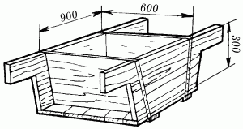
Рис. 21. Растворный ящик.
При оштукатуривании часто приходится заделывать борозды, каналы, ниши, металлические балки. Для этой цели борозды закрывают, набивая полосы проволочной сетки. Металлические балки обматывают сеткой, под которую кладут жесткий каркас из арматурной стали. К каркасу сетку привязывают мягкой проволокой. Устройство сетчатого основания по каркасу выполняют также при оштукатуривании некоторых видов конструкций.
ОштукатуриваниеНанесение штукатурного слоя можно выполнять набрасыванием и намазыванием. Наиболее эффективное набрасывание делается кельмой с сокола. Для этого, взяв сокол в левую руку, опирают его с небольшим наклоном на борт ящика с раствором и кельмой накладывают последний на сокол последовательными рядами от себя, начиная с поднятой части. Подойдя к поверхности, раствор забирают на кельму, двигая ее правым ребром или концом от себя к центру сокола.
Для набрасывания раствора с лопатки делают взмах кистью руки и резко останавливаются. Бросок не должен быть очень сильным, чтобы не происходило разбрызгивания раствора. Допускается выполнение броска как справа налево, так и слева направо.
Намазывание раствора на поверхность применяют при нанесении его тонким слоем. Делают это кельмой или соколом.
Сокол используют при намазывании раствора на стены и потолки. Для этого, положив на сокол кельмой раствор, его подносят к поверхности и острием кельмы прижимают так, чтобы расстояние между ребром сокола и обрабатываемой поверхностью было равно толщине наносимого слоя. Наносят слой полосами: на стену сокол поднимают вверх, а на потолок перемещают на себя. Для получения слоя одинаковой толщины нажим лопаткой должен быть равномерным.
Кельмой обычно намазывают раствор на сетчатые поверхности. Сокол с набранным на него раствором приставляют к стене, и тыльной стороной лопатки сдвигая очередную порцию раствора, намазывают ее на поверхность. Сокол при этом продвигают за лопаткой, чтобы остатки раствора падали на него. Для лучшего сцепления намазываемого слоя с основанием его обязательно увлажняют водой.
Разравнивание раствора выполняют для того, чтобы снять его излишки в местах, где он в избытке, и заполнить им углубления.
Для разравнивания по маякам применяют правило или малку. Этими инструментами несколько раз проводят под углом к вертикали или снизу вверх, прижимая их к маякам, очищенным от раствора. Срезанный правилом или малкой раствор наносят на места пропусков. Разравнивание продолжают до тех пор, пока поверхность не станет ровной и гладкой на уровне маяков.
Для получения гладкой поверхности последние движения правила выполняют на лоск и передвигают правило держат под углом к маякам, подняв переднее ребро и заглаживая раствор нижним ребром.
При отсутствии маяков слои штукатурного слоя разравнивают фильцбреттом (теркой). Для этой цели его помещают в положение на лоск и передвигают по стенам в различных направлениях. Разравнивая намет на потолках, перемещают обычно на себя. При перемещении ему придают волнообразные движения. Благодаря этому раствор несколько разжижается, что способствует разравниванию.
После разравнивания последнего слоя инвентарные маяки снимают, а гипсовые вырубают и эти места заделывают тем же раствором, которым наносился грунт.
Разделку углов внешних (усенков) и внутренних (лузг) выполняют после разравнивания последнего слоя грунта. Проделывать эту операцию надо очень тщательно, так как она сильно влияет на внешний вид помещения. Мелкие дефекты угловых сопряженний устраняют фильцбреттом. Чтобы не обкалывались внешние углы, их иногда затупляют фаской, срезая раствор кельмой.
Нанесение декоративных растворовДекоративные растворы, или накрывку, наносят, когда подготовительные слои схватились и приобрели прочность. Наносить накрывку надо на предварительно увлажненные подготовительные слои, желательно по деревянным маякам в виде реек. Толщина накрывки бывает от 5 до 20 мм, что зависит от характера последующей обработки поверхности штукатурки. Раствор наносят набрасыванием или намазыванием кельмой. Уплотняют, выравнивают и сглаживают накрывку фильцбреттом и правилом.
Работу на захватке следует вести без перерыва; чтобы стыки накрывки в случае непредвиденных перерывов были незаметны, накрывку следует обрезать по правилу, закрывая на время перерывов мокрыми рогожами, и держать все время во влажном состоянии.
Можно оставить края рваными и при продолжении работы срезать их, чтобы вновь наносимый слой примыкал к сырому срезу нанесенного слоя.
Учитывая, что жесткие растворы терразитовых и каменных штукатурок могут отваливаться с нанесенной поверхности, у стен следует положить строганые доски, с которых можно собирать упавший раствор и использовать его впоследствии для обрызга.
В зависимости от вида фактуры и размерности заполнителя накрывку после уплотнения затирают фильцбреттом (при крупном заполнителе) или правилом (при мелком заполнителе), так как это способствует уплотнению раствора, и на поверхности не остается раковин. Уплотнение раствора и своевременная затирка ликвидируют усадочные трещины, что положительно влияет на долговечность штукатурки. Затирка, выполняемая до начала схватывания, приводит к возникновению наружных трещин при отвердении раствора, а запоздалая затирка вызывает внутренние трещины, которые появляются в более позднее время и образуют на поверхности черные полосы.
Ремонт оштукатуренных поверхностейРемонт штукатурки возникает при необходимости замены отслоившейся на всю толщину или в накрывочном слое штукатурки, заделки трещин и выбоин.
При замене отслоившейся на всю толщину штукатурки определяют простукиванием границы некачественной штукатурки. Ее удаляют, основание очищают от остатков раствора и тщательно подготавливают: кирпичные, каменные, бетонные поверхности для этого насекают, деревянные подбивают дранью, места утолщенных штукатурок, в том числе на дверных и оконных откосах, армируют сеткой или проволочным плетением, смачивают и штукатурят с соблюдением технологии выполнения штукатурных работ.
При отслоившемся накрывочном слое его удаляют до грунтового, который насекают, промывают водой, вновь наносят накрывочный слой из того же раствора, что и соседние участки, затирают поверхность.
Трещины разрезают, а выбоины расчищают до основания, промывают водой, заполняют таким же раствором и затирают поверхность.
При оштукатуривании дефектных мест накрывочный слой заглаживают и затирают вровень с поверхностью, не допуская «натасков» раствора на ранее оштукатуренные поверхности.
Штукатурку с небольшими повреждениями поверхности перетирают известковым, известково-цементным или цементным раствором, приготовленным на мелкозернистом песке. Гипс в растворах для перетирки не применяют, так как в процессе длительного перетирания он теряет прочность, вызывая отмеливание поверхности. Техника перетирки состоит из следующих операций: поверхность смачивают водой, затем на терку берут небольшое количество раствора, намазывают на поверхность, обрызгивая водой с кисти, растирают раствор вкруговую или вразгон, распределяя его тонким слоем, не оставляя неперетертых мест.